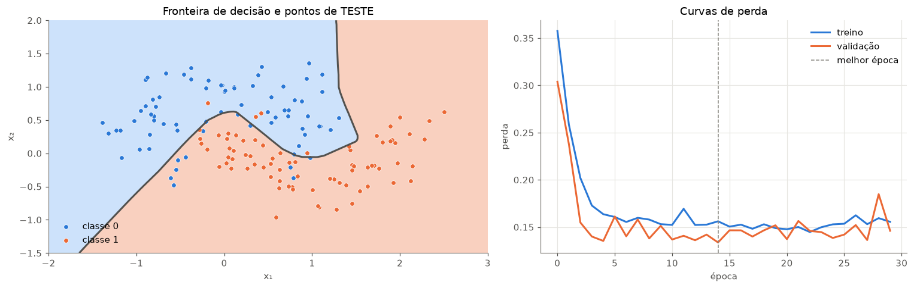
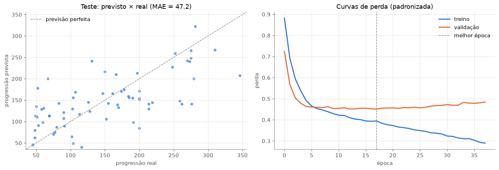
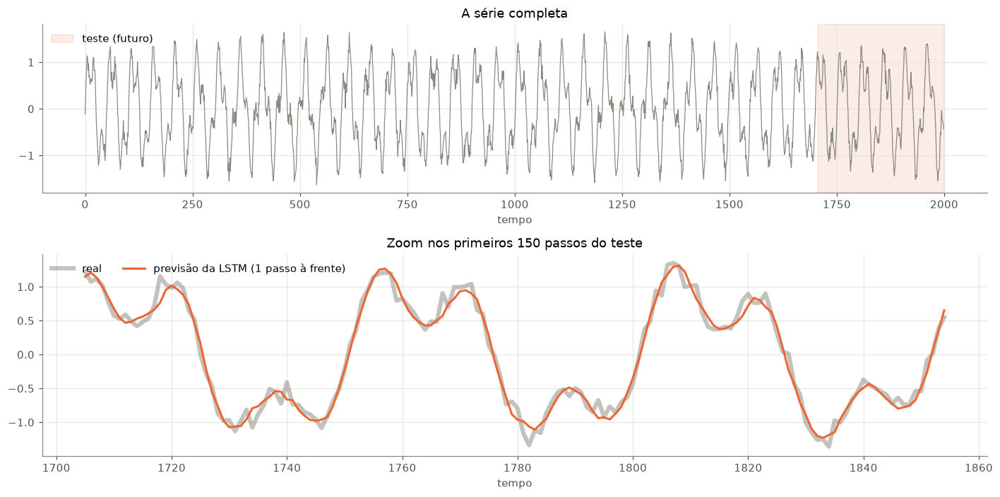
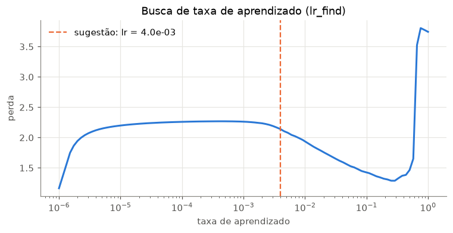
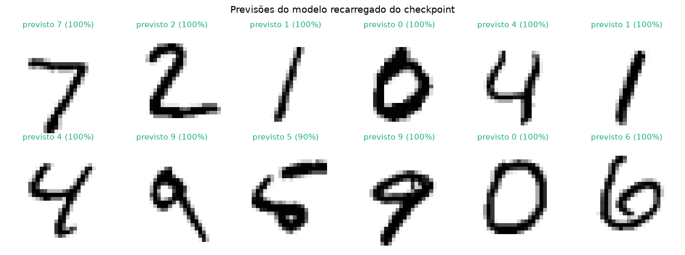
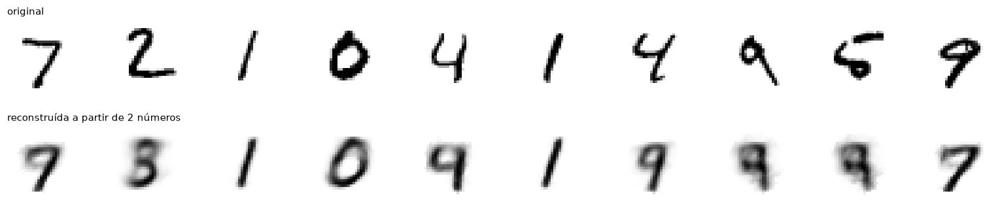
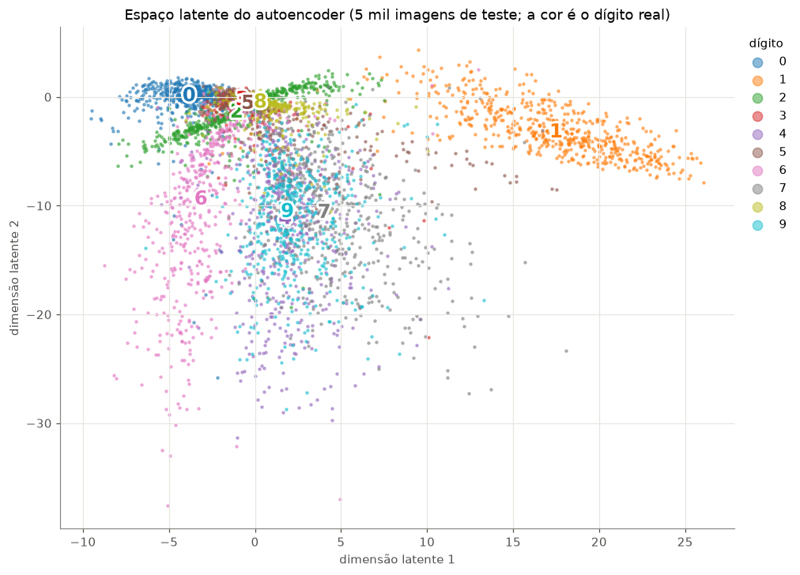

Code
# no Google Colab, o PyTorch já vem instalado; o Lightning não
import sys
if "google.colab" in sys.modules:
!pip install -q lightningLink Colab

Na aula 4 montamos o pipeline completo à mão (Dataset, DataLoader, loop de treino, loop de avaliação) e depois vimos o mesmo pipeline no Lightning. Hoje vamos mostrar por que o Lightning vale a pena: com um único LightningModule genérico, vamos treinar redes para problemas completamente diferentes.
A ideia central da aula:
Todo problema de Deep Learning supervisionado é a combinação de 3 peças: os dados, a rede e a perda. O resto (laço de treino, validação, early stopping, salvar o melhor modelo, registrar métricas, GPU…) é sempre igual, e o Lightning cuida disso.
Roteiro
LightningDataModule: como os dados se organizam em um objetoLightningModule genéricoTrainer (callbacks, logger, smoke test, busca de taxa de aprendizado)# no Google Colab, o PyTorch já vem instalado; o Lightning não
import sys
if "google.colab" in sys.modules:
!pip install -q lightningimport io
import os
import time
import contextlib
import logging
import warnings
import numpy as np
import pandas as pd
import matplotlib.pyplot as plt
import torch
import torch.nn as nn
from torch.utils.data import Dataset, DataLoader, TensorDataset, random_split
from torchvision import datasets, transforms
from sklearn.datasets import make_moons, load_diabetes
import lightning as L
from lightning.pytorch.callbacks import EarlyStopping, ModelCheckpoint
from lightning.pytorch.loggers import CSVLogger
from lightning.pytorch.tuner import Tuner
from lightning.pytorch.utilities.model_summary import ModelSummary
AZUL, LARANJA, VERDE, CINZA, TINTA = "#2a78d6", "#eb6834", "#1baf7a", "#898781", "#52514e"
plt.rcParams.update({
"axes.spines.top": False, "axes.spines.right": False,
"axes.edgecolor": CINZA, "axes.labelcolor": TINTA,
"xtick.color": TINTA, "ytick.color": TINTA,
"axes.grid": True, "grid.color": "#e6e5e1", "figure.dpi": 110,
})
# saída do Lightning mais limpa para a aula
logging.getLogger("lightning.pytorch").setLevel(logging.ERROR)
logging.getLogger("lightning.fabric").setLevel(logging.ERROR)
for aviso in [".*does not have many workers.*", ".*GPU available but not used.*", ".*LeafSpec.*",
".*smaller than the logging interval.*", ".*Checkpoint directory.*exists.*"]:
warnings.filterwarnings("ignore", aviso)
# CPU é mais rápida que a GPU do Mac (MPS) para redes pequenas; no Colab com GPU, usamos CUDA
ACELERADOR = "gpu" if torch.cuda.is_available() else "cpu"
L.seed_everything(42)
print(f"Lightning {L.__version__}, acelerador: {ACELERADOR}")Lightning 2.6.6, acelerador: cpuO Lightning não muda o PyTorch: ele separa o código de um projeto em três objetos, cada um com uma responsabilidade. Você escreve o que é específico do seu problema em métodos com nomes fixos, e o Lightning chama esses métodos na hora certa.
┌──────────────────────────────┐ ┌──────────────────────────────────┐
│ LightningDataModule │ │ LightningModule │
│ "OS DADOS" │ │ "O MODELO" │
│ │ │ │
│ prepare_data() → baixar │ │ __init__() → a rede │
│ setup() → Datasets, │ │ forward() → previsão │
│ divisão, │ │ training_step() → perda │
│ padronizar│ │ validation_step() → métricas │
│ train_dataloader() │ │ test_step() │
│ val_dataloader() │ │ configure_optimizers() │
│ test_dataloader() │ │ → otimizador │
└──────────────┬───────────────┘ └────────────────┬─────────────────┘
│ │
└──────────────────┬────────────────────┘
▼
┌──────────────────────────────────────────┐
│ Trainer "O MOTOR" │
│ laço de épocas e lotes, CPU/GPU, │
│ callbacks (early stopping, checkpoint), │
│ logger (CSV, TensorBoard, W&B) │
│ │
│ trainer.fit(modelo, datamodule=dm) │
│ trainer.test(...) trainer.predict(...) │
└──────────────────────────────────────────┘| O quê | Onde | Nesta aula |
|---|---|---|
| Baixar os dados | LightningDataModule.prepare_data() |
MNISTDataModule.prepare_data |
Criar os Datasets, dividir treino/val/teste, padronizar |
LightningDataModule.setup() |
TabelaDataModule.setup |
DataLoaders (tamanho do lote, embaralhamento) |
train_dataloader(), val_dataloader(), test_dataloader() |
batch_size=32, shuffle=True só no treino |
| A arquitetura da rede | LightningModule.__init__() (criada lá dentro ou recebida como argumento) |
self.rede = rede |
| Como a rede faz uma previsão | forward() |
return self.rede(x) |
| A perda | training_step(): calcula e devolve a perda |
self.perda(saida, y) |
| Métricas | training_step(), validation_step(), test_step() com self.log(...) |
acurácia, MAE |
| Otimizador (e scheduler de lr) | configure_optimizers() |
torch.optim.Adam(self.parameters(), lr=self.lr) |
| Nº de épocas, CPU/GPU, precisão | Trainer(max_epochs=..., accelerator=..., precision=...) |
função treina |
| Early stopping, salvar o melhor modelo | Trainer(callbacks=[EarlyStopping(...), ModelCheckpoint(...)]) |
função treina |
| Onde registrar as métricas | Trainer(logger=...) |
CSVLogger (e W&B no fim da aula) |
| Treinar, testar, prever | trainer.fit(), trainer.test(), trainer.predict() |
trainer.fit() faz por baixo dos panosEm pseudo-código, o trainer.fit(modelo, datamodule=dm) executa essencialmente o laço que escrevemos à mão na aula 4, chamando os seus métodos:
dm.prepare_data() # 1. baixa os dados
dm.setup("fit") # 2. cria os Datasets
modelo.to(device) # 3. leva a rede para CPU/GPU
otimizador = modelo.configure_optimizers()
# 4. "sanity check": roda 2 lotes de validação ANTES de treinar, para achar bugs na validação cedo
for epoca in range(max_epochs):
modelo.train() # modo de treino
for i, lote in enumerate(dm.train_dataloader()):
lote = mover_para(device, lote)
perda = modelo.training_step(lote, i) # ← o seu código
otimizador.zero_grad()
perda.backward()
otimizador.step()
modelo.eval() # modo de avaliação
with torch.no_grad():
for i, lote in enumerate(dm.val_dataloader()):
modelo.validation_step(lote, i) # ← o seu código
# 5. fecha a época: tira a média dos self.log(..., on_epoch=True) e envia ao logger
# 6. callbacks: ModelCheckpoint salva se val_perda melhorou; EarlyStopping decide se para.to(device), zero_grad(), backward(), step(), model.train(), model.eval() nem torch.no_grad(): o Trainer faz isso. O training_step só precisa devolver a perda. (Para casos especiais, como GANs com dois otimizadores, existe a otimização manual: self.automatic_optimization = False.)self.log("nome", valor, on_step=..., on_epoch=...): com on_epoch=True, o Lightning tira a média do valor em todos os lotes da época (ponderada pelo tamanho do lote) e registra um número por época.self.log é o que os callbacks enxergam: EarlyStopping(monitor="val_perda") só funciona porque o validation_step registra "val_perda".self.save_hyperparameters() guarda os argumentos do __init__ (como o lr) dentro do checkpoint, para recarregar o modelo depois com load_from_checkpoint.trainer.test(..., ckpt_path="best") recarrega o melhor checkpoint salvo antes de testar.logs/<nome>/version_N/ com as métricas (metrics.csv), os hiperparâmetros (hparams.yaml) e os checkpoints.LightningDataModule: todos os dados em um objetoNa aula 4, os dados estavam espalhados: um Dataset, um random_split, três DataLoaders.
Com o pytorch lightning, conseguimos organizar tudo isso em uma estrutura unica chamada: LightningDataModule, que junta tudo em uma classe com métodos de nome fixo:
| Método | Responsabilidade |
|---|---|
prepare_data() |
baixar os dados |
setup(stage) |
dividir treino/validação/teste, padronizar |
train_dataloader() |
o DataLoader de treino (com embaralhamento) |
val_dataloader() / test_dataloader() |
os DataLoaders de validação e teste |
Vamos escrever dois. O primeiro serve para qualquer tabela de números (X, y) e já faz o que aprendemos nas aulas de Machine Learning: divide os dados (de forma aleatória ou temporal) e padroniza usando só a média e o desvio do treino.
class TabelaDataModule(L.LightningDataModule):
"""Recebe X e y (tensores) e cuida da divisão treino/val/teste, da padronização e dos DataLoaders."""
def __init__(self, X, y, batch_size=32,
frac_val=0.15, frac_teste=0.15,
padroniza_x=True,
padroniza_y=False,
temporal=False,
seed=42):
super().__init__()
self.X, self.y = X.float(), y
self.batch_size, self.frac_val, self.frac_teste = batch_size, frac_val, frac_teste
self.padroniza_x, self.padroniza_y, self.temporal, self.seed = padroniza_x, padroniza_y, temporal, seed
# aqui a funcao padrao do lightning onde organiza toda a estrutura dos dados
def setup(self,
stage=None):
if hasattr(self, "treino"): # setup é uma requisição do lightning
return
# mede o tamanho do conjunto de treino
n = len(self.X)
# calcula a fracao que vai pra treino e a fracao pra teste
n_teste, n_val = int(n * self.frac_teste), int(n * self.frac_val)
n_treino = n - n_val - n_teste
# ajeitando aqui para dados temporais, lembrando que a divisao nao pode ser aleatoria
idx = torch.arange(n) if self.temporal else torch.randperm(n, generator=torch.Generator().manual_seed(self.seed))
tr, va, te = idx[:n_treino], idx[n_treino:n_treino + n_val], idx[n_treino + n_val:]
X, y = self.X.clone(), self.y.clone()
if self.padroniza_x: # média e desvio calculados SÓ no treino #stardadization
self.x_media, self.x_desvio = X[tr].mean(0), X[tr].std(0)
X = (X - self.x_media) / self.x_desvio
if self.padroniza_y:
self.y_media, self.y_desvio = y[tr].mean(0), y[tr].std(0)
y = (y - self.y_media) / self.y_desvio
self.treino, self.val, self.teste = TensorDataset(X[tr], y[tr]), TensorDataset(X[va], y[va]), TensorDataset(X[te], y[te])
def train_dataloader(self):
return DataLoader(self.treino,
batch_size=self.batch_size,
shuffle=True,
generator=torch.Generator().manual_seed(self.seed))
def val_dataloader(self):
return DataLoader(self.val, batch_size=1024)
def test_dataloader(self):
return DataLoader(self.teste, batch_size=1024)O segundo é para o MNIST, e mostra o prepare_data (download). Ele também tem uma opção autoencoder, em vez de (imagem, rótulo), cada amostra vira (imagem, imagem). Vamos usá-la no último problema.
class ParesIguais(Dataset):
"""Embrulha um dataset de imagens para devolver (imagem, imagem)"""
def __init__(self, base):
self.base = base
def __len__(self):
return len(self.base)
def __getitem__(self, i):
x, _ = self.base[i]
return x, x
class MNISTDataModule(L.LightningDataModule):
def __init__(self, batch_size=128, autoencoder=False):
super().__init__()
self.batch_size, self.autoencoder = batch_size, autoencoder
def prepare_data(self): # só baixa (na primeira vez)
datasets.MNIST("data", train=True, download=True)
datasets.MNIST("data", train=False, download=True)
def setup(self, stage=None):
if hasattr(self, "treino"):
return
completo = datasets.MNIST("data", train=True, transform=transforms.ToTensor())
self.teste = datasets.MNIST("data", train=False, transform=transforms.ToTensor())
if self.autoencoder:
completo, self.teste = ParesIguais(completo), ParesIguais(self.teste)
self.treino, self.val = random_split(completo, [55000, 5000], generator=torch.Generator().manual_seed(42))
def train_dataloader(self):
return DataLoader(self.treino, batch_size=self.batch_size, shuffle=True)
def val_dataloader(self):
return DataLoader(self.val, batch_size=1000)
def test_dataloader(self):
return DataLoader(self.teste, batch_size=1000)LightningModule genéricoNa aula 4, o LightningModule tinha a rede do MNIST escrita dentro dele. Agora vamos receber a rede, a perda e as métricas como argumentos. O resto (o passo de treino, de validação, de teste, o registro das métricas e o otimizador) é igual para qualquer problema.
class ModeloGenerico(L.LightningModule):
"""Treina QUALQUER rede com QUALQUER perda.
Note que essa classe está usando a recebendo metodos da classe LightningModule (inherent)"""
def __init__(self, rede, perda, metricas=None, lr=1e-3):
super().__init__()
self.save_hyperparameters(ignore=["rede", "perda", "metricas"]) # guarda o lr junto com o checkpoint
self.rede = rede
self.perda = perda
self.metricas = metricas or {}
self.lr = lr
def forward(self, x):
return self.rede(x) ## calcula o forward pass
def _passo(self, lote, etapa):
x, y = lote
saida = self(x) # aqui tambem é um forward pass
perda = self.perda(saida, y) # calcula a loss
self.log(f"{etapa}_perda", perda, on_step=False, on_epoch=True) # printa a loss para aquele step
for nome, funcao in self.metricas.items():
self.log(f"{etapa}_{nome}", funcao(saida, y), on_step=False, on_epoch=True)
return perda
def training_step(self, lote, i):
## o step de treino possui um nome padrao por definicao e recebe o step
return self._passo(lote, "treino")
def validation_step(self, lote, i):
self._passo(lote, "val")
def test_step(self, lote, i):
self._passo(lote, "teste")
def predict_step(self, lote, i):
# aqui a inferencia
return self(lote[0])
def configure_optimizers(self):
## o optimizer vai executar a funcao de backpropagation e atualizacao dos pesos da rede
return torch.optim.Adam(self.parameters(), lr=self.lr)
## aqui escrevemos as metricas
# duas métricas simples que vamos reaproveitar
def acuracia(logits, y):
return (logits.argmax(dim=1) == y).float().mean()
def mae(previsto, y):
return (previsto - y).abs().mean()TrainerO Trainer facilita muito a vida na hora de criar as redes neurais. Ele possui diversas funções que são extremamente úteis e te reduzem muito tempo quando escreves o código, alguma dessas funções:
| Opção | O que faz | Sem o Lightning, você teria que… |
|---|---|---|
max_epochs |
número máximo de épocas | escrever o loop de épocas |
accelerator, devices |
CPU, GPU, várias GPUs | mover modelo e cada lote com .to(device) |
callbacks=[EarlyStopping(...)] |
para quando a validação não melhora mais | guardar o melhor valor e contar épocas sem melhora |
callbacks=[ModelCheckpoint(...)] |
salva o melhor modelo em disco | salvar e recarregar state_dict à mão |
logger=CSVLogger(...) |
registra as métricas (também TensorBoard, W&B, MLflow) | montar listas e salvar arquivos |
fast_dev_run=True |
roda 1 lote de treino e validação, para achar bugs em segundos | esperar uma época inteira para ver o erro |
overfit_batches=1 |
treina em 1 lote só: se a perda não chegar perto de zero, há bug | escrever um script de depuração |
precision="16-mixed" |
treino em meia precisão (mais rápido na GPU) | usar torch.autocast e GradScaler |
gradient_clip_val |
limita o tamanho do gradiente | chamar clip_grad_norm_ no lugar certo |
Tuner(trainer).lr_find(...) |
sugere uma taxa de aprendizado | fazer a busca à mão |
Vamos juntar as mais usadas em uma função treina, que vale para os cinco problemas: early stopping, checkpoint do melhor modelo (pela perda de validação), registro em CSV e avaliação no teste com o melhor modelo, não com o da última época.
def treina(modelo, dm, nome, max_epocas=100, paciencia=10):
checkpoint = ModelCheckpoint(monitor="val_perda", mode="min") # guarda o melhor modelo, aquele que atinge menor loss na validacao
trainer = L.Trainer(
max_epochs=max_epocas,
accelerator=ACELERADOR,
callbacks=[EarlyStopping(monitor="val_perda", patience=paciencia), checkpoint],
logger=CSVLogger("logs/dl5", name=nome),
enable_progress_bar=False,
enable_model_summary=False,
)
inicio = time.time()
trainer.fit(modelo, datamodule=dm) # aqui fita o modelo que temos com o dataloader
# aqui recarrega o melhor conjunto de pesos e calcula a inferencia
resultado = trainer.test(modelo, datamodule=dm, ckpt_path="best", verbose=False)[0] # recarrega o melhor
melhor_epoca = int(checkpoint.best_model_path.split("epoch=")[1].split("-")[0])
print(f"[{nome}] {trainer.current_epoch} épocas em {time.time() - inicio:.0f} s; melhor época: {melhor_epoca}")
print(f"[{nome}] teste: " + " ".join(f"{k} = {v:.4f}" for k, v in resultado.items()))
return trainer
def historico(trainer):
"""Lê o CSV do logger e devolve uma linha por época."""
df = pd.read_csv(os.path.join(trainer.logger.log_dir, "metrics.csv"))
return df.groupby("epoch")[["treino_perda", "val_perda"]].first().dropna()
def plota_perda(trainer, ax, titulo):
h = historico(trainer)
ax.plot(h.index, h["treino_perda"], color=AZUL, lw=2, label="treino")
ax.plot(h.index, h["val_perda"], color=LARANJA, lw=2, label="validação")
ax.axvline(h["val_perda"].idxmin(), color=CINZA, ls="--", lw=1, label="melhor época")
ax.set(title=titulo, xlabel="época", ylabel="perda")
ax.legend(frameon=False)Dois grupos de pontos em forma de lua, onde uma reta não separa as classes.
| Peça | Escolha |
|---|---|
| Dados | make_moons: 1.000 pontos, 2 features, 2 classes |
| Rede | MLP 2 → 32 → 32 → 2 |
| Perda | nn.CrossEntropyLoss() |
# aqui cria o dataset, baseado num dataset comum que imita duas meia luas
X_luas, y_luas = make_moons(n_samples=1000, noise=0.25, random_state=0)
# aqui prepara o dataloader.
dm_luas = TabelaDataModule(torch.tensor(X_luas), torch.tensor(y_luas), batch_size=32)
## aqui criamos nossa Rede neural
## Uma rede muito simples, simplesmente uma sequencia MLP com 1 camada interna de 32 neuronios.
rede_luas = nn.Sequential(
nn.Linear(2, 32),
nn.ReLU(),
nn.Linear(32, 32),
nn.ReLU(),
nn.Linear(32, 2)
)
# Aqui adaptamos nosso modelo e passamos o função de perda, nesse caso vamos usar a cross entropy como funcao de perca.
# Contudo, note que monitoramos o modelo baseado na metrica de acuracia, quao correto o modelo esta nos dados de validacao
## Assim, o modelo é treinado para minizar a cross-entropy, mas a gente monitora ele a partir do qual correto ele ta generalizando os valores
modelo_luas = ModeloGenerico(rede_luas,
nn.CrossEntropyLoss(),
metricas={"acc": acuracia},
lr=1e-2
)
print(ModelSummary(modelo_luas)) | Name | Type | Params | Mode | FLOPs
-----------------------------------------------------------
0 | rede | Sequential | 1.2 K | train | 0
1 | perda | CrossEntropyLoss | 0 | train | 0
-----------------------------------------------------------
1.2 K Trainable params
0 Non-trainable params
1.2 K Total params
0.005 Total estimated model params size (MB)
7 Modules in train mode
0 Modules in eval mode
0 Total FlopsAntes de treinar de verdade sempre é bom fazer um teste, tal qual o smoke test* Com fast_dev_run=True, o Lightning roda um batch** de treino e um de validação. Se houver qualquer erro de formato, de tipo ou de lógica, ele aparece em segundos, e não depois de uma hora de treino. Use sempre que mudar alguma coisa.
L.Trainer(fast_dev_run=True,
accelerator=ACELERADOR, # gpu ou cpu
enable_progress_bar=False,
enable_model_summary=False,
logger=False).fit(modelo_luas, datamodule=dm_luas)
print("smoke test, se tiver um erro iria printar aqui! ")smoke test, se tiver um erro iria printar aqui! trainer_luas = treina(modelo_luas,
dm_luas,
"luas",
max_epocas=200,
paciencia=15)[luas] 30 épocas em 0 s; melhor época: 14
[luas] teste: teste_perda = 0.2699 teste_acc = 0.9000gradetensor([[-2.0000, -1.5000],
[-1.9833, -1.5000],
[-1.9666, -1.5000],
...,
[ 2.9666, 2.0000],
[ 2.9833, 2.0000],
[ 3.0000, 2.0000]])# fronteira de decisão, a grade é padronizada com a média e o desvio do TREINO, como os dados
g1, g2 = np.meshgrid(np.linspace(-2, 3, 300), np.linspace(-1.5, 2, 300))
grade = torch.tensor(np.c_[g1.ravel(), g2.ravel()], dtype=torch.float32)
with torch.no_grad():
prob = torch.softmax(modelo_luas((grade - dm_luas.x_media) / dm_luas.x_desvio), dim=1)[:, 1].reshape(300, 300)
X_teste_luas = dm_luas.teste.tensors[0] * dm_luas.x_desvio + dm_luas.x_media # volta à escala original
y_teste_luas = dm_luas.teste.tensors[1]
fig, axes = plt.subplots(1, 2, figsize=(14, 4.5), width_ratios=[1.2, 1])
axes[0].contourf(g1, g2, prob, levels=[0, 0.5, 1], colors=["#cde2fb", "#f9d0bf"])
axes[0].contour(g1, g2, prob, levels=[0.5], colors=TINTA, linewidths=2)
axes[0].grid(False)
for classe, cor in [(0, AZUL), (1, LARANJA)]:
m = y_teste_luas == classe
axes[0].scatter(X_teste_luas[m, 0], X_teste_luas[m, 1], s=25, color=cor, edgecolor="white", lw=0.5, label=f"classe {classe}")
axes[0].set(title="Fronteira de decisão e pontos de TESTE", xlabel="x₁", ylabel="x₂")
axes[0].legend(frameon=False, loc="lower left")
plota_perda(trainer_luas, axes[1], "Curvas de perda")
plt.tight_layout()
plt.show()
O dataset diabetes do scikit-learn tem 442 pacientes, 10 medidas clínicas (idade, IMC, pressão, exames de sangue…) e o alvo é um índice de progressão da doença um ano depois. Agora é regressão, a rede devolve um número, e a perda muda para o erro quadrático médio.
| Peça | Escolha |
|---|---|
| Dados | 442 linhas, 10 features; X e y padronizados (com a média e o desvio do treino) |
| Rede | MLP 10 → 64 → 64 → 1 |
| Perda | nn.MSELoss() |
Repare que a função treina é a mesma do problema anterior: só mudaram os dados, a rede e a perda.
diabetes = load_diabetes()
dm_diab = TabelaDataModule(torch.tensor(diabetes.data), torch.tensor(diabetes.target).float().unsqueeze(1),
batch_size=32, padroniza_y=True)
torch.manual_seed(0)
## cria a rede aqui
rede_diab = nn.Sequential(nn.Linear(10, 64), nn.ReLU(), nn.Linear(64, 64), nn.ReLU(), nn.Linear(64, 1))
## fita a rede com a loss e a metrica
modelo_diab = ModeloGenerico(rede_diab, nn.MSELoss(), metricas={"mae": mae}, lr=1e-3)
trainer_diab = treina(modelo_diab, dm_diab, "diabetes", max_epocas=300, paciencia=20)[diabetes] 38 épocas em 0 s; melhor época: 17
[diabetes] teste: teste_perda = 0.6152 teste_mae = 0.6170Para interpretar, usamos o trainer.predict e desfazemos a padronização de y, voltando à unidade original do índice. Comparamos com um baseline que sempre prevê a média do treino:
previsto = torch.cat(trainer_diab.predict(modelo_diab, dataloaders=dm_diab.test_dataloader()))
previsto = previsto * dm_diab.y_desvio + dm_diab.y_media
real = dm_diab.teste.tensors[1] * dm_diab.y_desvio + dm_diab.y_media
mae_rede = (previsto - real).abs().mean().item()
mae_base = (dm_diab.y_media - real).abs().mean().item()
print(f"erro absoluto médio no teste: rede = {mae_rede:.1f} baseline (média do treino) = {mae_base:.1f}")
fig, axes = plt.subplots(1, 2, figsize=(13, 4.5))
axes[0].scatter(real, previsto, s=30, color=AZUL, alpha=0.7, edgecolor="white", lw=0.5)
lim = [real.min().item() - 10, real.max().item() + 10]
axes[0].plot(lim, lim, color=CINZA, ls="--", lw=1, label="previsão perfeita")
axes[0].set(xlim=lim, ylim=lim, xlabel="progressão real", ylabel="progressão prevista",
title=f"Teste: previsto × real (MAE = {mae_rede:.1f})")
axes[0].legend(frameon=False)
plota_perda(trainer_diab, axes[1], "Curvas de perda (padronizada)")
plt.tight_layout()
plt.show()erro absoluto médio no teste: rede = 47.2 baseline (média do treino) = 68.6
A rede erra, em média, ~47 pontos do índice, contra ~69 do baseline: aprendeu algo útil, mas a tabela é pequena (442 pacientes) e o problema é difícil. Repare também nas curvas: a perda de validação para de melhorar por volta da época 17 enquanto a de treino continua caindo (início de overfitting). O EarlyStopping esperou 20 épocas sem melhora (paciencia=20), parou o treino e o teste usou o melhor checkpoint, não o último.
Uma série sintética, como uma medição de sensor: a soma de dois ciclos mais ruído. A tarefa: olhando os 30 últimos valores, prever o próximo. Cada amostra é uma janela de 30 valores, e o alvo é o valor seguinte.
| Peça | Escolha |
|---|---|
| Dados | janelas de 30 passos; divisão temporal (treino = passado, teste = futuro), como na aula de balneabilidade |
| Rede | LSTM, uma rede recorrente feita para sequências (veremos em detalhe nas próximas aulas) |
| Perda | nn.MSELoss() |
A LSTM tem uma interface diferente do nn.Sequential, então a embrulhamos em uma pequena classe. Para o ModeloGenerico, isso não faz diferença: ele só precisa de algo que receba x e devolva a previsão.
t = torch.arange(2000, dtype=torch.float32)
torch.manual_seed(0)
serie = torch.sin(2 * np.pi * t / 50) + 0.5 * torch.sin(2 * np.pi * t / 17) + 0.1 * torch.randn(2000)
JANELA = 30
X_serie = torch.stack([serie[i:i + JANELA] for i in range(len(serie) - JANELA)]) # (1970, 30)
y_serie = serie[JANELA:].unsqueeze(1) # (1970, 1)
dm_serie = TabelaDataModule(X_serie, y_serie, batch_size=64, padroniza_x=False, temporal=True)
class PrevisorLSTM(nn.Module):
def __init__(self, oculto=32):
super().__init__()
self.lstm = nn.LSTM(input_size=1, hidden_size=oculto, batch_first=True)
self.saida = nn.Linear(oculto, 1)
def forward(self, x): # x: (lote, 30)
h, _ = self.lstm(x.unsqueeze(-1)) # (lote, 30, 1) - (lote, 30, oculto)
return self.saida(h[:, -1]) # usa o estado do último passo - (lote, 1)
torch.manual_seed(0)
modelo_serie = ModeloGenerico(PrevisorLSTM(), nn.MSELoss(), metricas={"mae": mae}, lr=5e-3)
trainer_serie = treina(modelo_serie, dm_serie, "serie_temporal", max_epocas=100, paciencia=10)[serie_temporal] 43 épocas em 3 s; melhor época: 32
[serie_temporal] teste: teste_perda = 0.0130 teste_mae = 0.0880previsto_serie = torch.cat(trainer_serie.predict(modelo_serie,
dataloaders=dm_serie.test_dataloader()
)
)
real_serie = dm_serie.teste.tensors[1]
inicio_teste = len(serie) - len(real_serie)
fig, axes = plt.subplots(2, 1, figsize=(13, 6.5), height_ratios=[1, 1.2])
axes[0].plot(t, serie, color=CINZA, lw=0.8)
axes[0].axvspan(inicio_teste, len(serie), color=LARANJA, alpha=0.12, label="teste (futuro)")
axes[0].set(title="A série completa", xlabel="tempo")
axes[0].legend(frameon=False, loc="upper left")
trecho = slice(0, 150)
tt = t[inicio_teste:][trecho]
axes[1].plot(tt, real_serie[trecho], color=CINZA, lw=4, alpha=0.5, label="real")
axes[1].plot(tt, previsto_serie[trecho], color=LARANJA, lw=2, label="previsão da LSTM (1 passo à frente)")
axes[1].set(title="Zoom nos primeiros 150 passos do teste", xlabel="tempo")
axes[1].legend(frameon=False, loc="upper left", ncols=2)
plt.tight_layout()
plt.show()
De volta ao MNIST, mas agora com uma rede convolucional (CNN) em vez do MLP. A CNN olha para pequenas regiões da imagem (3 × 3 pixels) e aproveita a estrutura espacial, que o MLP perdia ao achatar a imagem. O detalhe das convoluções fica para a próxima aula, hoje vamos tentar só olhar para a estrutura da rede no lightning.
| Peça | Escolha |
|---|---|
| Dados | MNISTDataModule: 55 mil treino, 5 mil validação, 10 mil teste |
| Rede | 2 camadas convolucionais + 1 camada linear |
| Perda | nn.CrossEntropyLoss() |
Em vez de chutar o lr, o Tuner treina por 100 passos aumentando o lr de forma exponencial (de 0,000001 até 1) e registra a perda. Uma boa taxa fica na região em que a perda cai mais rápido, antes de ela explodir.
dm_mnist = MNISTDataModule(batch_size=128)
torch.manual_seed(0)
## criando a rede com convoluções, vamos olhar mais fundo semana q vem
rede_cnn = nn.Sequential(
nn.Conv2d(1, 16, kernel_size=3, padding=1), nn.ReLU(), nn.MaxPool2d(2), # (1, 28, 28) - (16, 14, 14)
nn.Conv2d(16, 32, kernel_size=3, padding=1), nn.ReLU(), nn.MaxPool2d(2), # - (32, 7, 7)
nn.Flatten(), nn.Linear(32 * 7 * 7, 10),
)
# de novo, fitamos nos modelo com as metriacs
modelo_cnn = ModeloGenerico(rede_cnn, nn.CrossEntropyLoss(), metricas={"acc": acuracia})
print(ModelSummary(modelo_cnn, max_depth=2))
tuner = Tuner(L.Trainer(max_epochs=1,
accelerator=ACELERADOR,
logger=False,
enable_progress_bar=False,
enable_model_summary=False,
default_root_dir="logs/dl5/lr_find")
)
with contextlib.redirect_stderr(io.StringIO()): # esconde a barra de progresso da busca
busca_lr = tuner.lr_find(modelo_cnn,
datamodule=dm_mnist,
min_lr=1e-6,
max_lr=1.0,
num_training=100
)
r = busca_lr.results
fig, ax = plt.subplots(figsize=(8, 3.5))
ax.plot(r["lr"], r["loss"], color=AZUL, lw=2)
ax.axvline(busca_lr.suggestion(), color=LARANJA, ls="--", lw=1.5, label=f"sugestão: lr = {busca_lr.suggestion():.1e}")
ax.set(xscale="log", xlabel="taxa de aprendizado", ylabel="perda", title="Busca de taxa de aprendizado (lr_find)")
ax.legend(frameon=False)
plt.show()
print(f"o lr do modelo foi atualizado automaticamente para {modelo_cnn.lr:.1e}") | Name | Type | Params | Mode | FLOPs
------------------------------------------------------------
0 | rede | Sequential | 20.5 K | train | 0
1 | rede.0 | Conv2d | 160 | train | 0
2 | rede.1 | ReLU | 0 | train | 0
3 | rede.2 | MaxPool2d | 0 | train | 0
4 | rede.3 | Conv2d | 4.6 K | train | 0
5 | rede.4 | ReLU | 0 | train | 0
6 | rede.5 | MaxPool2d | 0 | train | 0
7 | rede.6 | Flatten | 0 | train | 0
8 | rede.7 | Linear | 15.7 K | train | 0
9 | perda | CrossEntropyLoss | 0 | train | 0
------------------------------------------------------------
20.5 K Trainable params
0 Non-trainable params
20.5 K Total params
0.082 Total estimated model params size (MB)
10 Modules in train mode
0 Modules in eval mode
0 Total Flops
o lr do modelo foi atualizado automaticamente para 4.0e-03A sugestão é uma heurística: sempre olhe a curva. Valores abaixo dela aprendem devagar; valores perto do ponto em que a perda explode são instáveis. Com o lr sugerido já aplicado ao modelo, treinamos por 3 épocas (cerca de 20 segundos na CPU):
trainer_cnn = treina(modelo_cnn,
dm_mnist,
"mnist_cnn",
max_epocas=3,
paciencia=2
)[mnist_cnn] 3 épocas em 19 s; melhor época: 2
[mnist_cnn] teste: teste_perda = 0.0371 teste_acc = 0.9879Na aula 4, o MLP chegou a ~97% de acurácia no teste. A CNN, com menos parâmetros, passa disso em poucas épocas.
O ModelCheckpoint salvou o melhor modelo em disco. Qualquer pessoa pode recarregá-lo depois (em outro notebook, em um servidor) e usá-lo para prever. Como a rede foi passada como argumento, informamos a arquitetura ao carregar:
caminho = trainer_cnn.checkpoint_callback.best_model_path
print(f"melhor modelo salvo em: {caminho}")
# aqui recarregamos os melhores pesos durante o treino
recarregado = ModeloGenerico.load_from_checkpoint(caminho, rede=rede_cnn, perda=nn.CrossEntropyLoss())
## evaluation mode, isso significa que os pesos nao serao mais atualizados
recarregado.eval()
x_ex, y_ex = next(iter(dm_mnist.test_dataloader()))
with torch.no_grad():
prob_ex = torch.softmax(recarregado(x_ex[:12]), dim=1)
fig, axes = plt.subplots(2, 6, figsize=(12, 4.5))
for ax, img, y, p in zip(axes.flat, x_ex[:12], y_ex[:12], prob_ex):
pred = p.argmax().item()
ax.imshow(img[0], cmap="gray_r")
ax.set_title(f"previsto {pred} ({p[pred]:.0%})", color=VERDE if pred == y else LARANJA, fontsize=10)
ax.axis("off")
plt.suptitle("Previsões do modelo recarregado do checkpoint")
plt.tight_layout()
plt.show()melhor modelo salvo em: logs/dl5/mnist_cnn/version_2/checkpoints/epoch=2-step=1290.ckpt
E se não houver rótulos? Um autoencoder aprende a comprimir a imagem em poucos números (o código ou espaço latente) e depois reconstruí-la a partir deles. O alvo é a própria imagem, então não precisa de rótulo nenhum: é aprendizado não supervisionado, como o clustering da aula de ML.
| Peça | Escolha |
|---|---|
| Dados | MNISTDataModule(autoencoder=True): cada amostra é (imagem, imagem) |
| Rede | codificador 784 → 128 → 2 e decodificador 2 → 128 → 784 |
| Perda | nn.MSELoss() entre a imagem reconstruída e a original |
Comprimimos cada imagem de 784 pixels em apenas 2 números, para poder desenhar o espaço latente.
class Autoencoder(nn.Module):
def __init__(self, dim_latente=2):
super().__init__()
self.codificador = nn.Sequential(nn.Flatten(), nn.Linear(784, 128), nn.ReLU(), nn.Linear(128, dim_latente))
self.decodificador = nn.Sequential(nn.Linear(dim_latente, 128), nn.ReLU(), nn.Linear(128, 784), nn.Sigmoid())
def forward(self, x):
z = self.codificador(x) # (lote, 2): a imagem comprimida
return self.decodificador(z).reshape(-1, 1, 28, 28) # reconstrução com o formato da entrada
dm_ae = MNISTDataModule(batch_size=128, autoencoder=True)
torch.manual_seed(0)
autoencoder = Autoencoder()
modelo_ae = ModeloGenerico(autoencoder, nn.MSELoss(), lr=2e-3)
trainer_ae = treina(modelo_ae, dm_ae, "autoencoder", max_epocas=10, paciencia=3)[autoencoder] 10 épocas em 13 s; melhor época: 9
[autoencoder] teste: teste_perda = 0.0422x_ae, _ = next(iter(dm_ae.test_dataloader()))
with torch.no_grad():
reconstruido = modelo_ae(x_ae[:10])
fig, axes = plt.subplots(2, 10, figsize=(14, 3.2))
for j in range(10):
axes[0, j].imshow(x_ae[j, 0], cmap="gray_r")
axes[1, j].imshow(reconstruido[j, 0], cmap="gray_r")
axes[0, j].axis("off"); axes[1, j].axis("off")
axes[0, 0].set_title("original", loc="left", fontsize=10)
axes[1, 0].set_title("reconstruída a partir de 2 números", loc="left", fontsize=10)
plt.tight_layout()
plt.show()
As reconstruções são borradas: 2 números é muito pouco para guardar uma imagem. Os dígitos com formas bem distintas (0, 1, 7) voltam reconhecíveis, mas vários viram um dígito parecido (um 2 vira algo como um 3, um 4 vira um 9). O mais interessante é o espaço latente: onde cada imagem do teste foi parar no plano de 2 dimensões? O autoencoder nunca viu os rótulos, mas vamos colorir os pontos pelo dígito verdadeiro:
teste_mnist = datasets.MNIST("data", train=False, transform=transforms.ToTensor())
x_todos = torch.stack([teste_mnist[i][0] for i in range(5000)])
rotulos = teste_mnist.targets[:5000]
with torch.no_grad():
z = autoencoder.codificador(x_todos)
import matplotlib.patheffects as pe
fig, ax = plt.subplots(figsize=(10, 7.5))
cores_digitos = plt.get_cmap("tab10")
for d in range(10):
m = rotulos == d
ax.scatter(z[m, 0], z[m, 1], s=4, color=cores_digitos(d), alpha=0.5, label=str(d))
cx, cy = z[m].median(dim=0).values
ax.text(cx, cy, str(d), fontsize=16, fontweight="bold", ha="center", va="center", color=cores_digitos(d),
path_effects=[pe.withStroke(linewidth=4, foreground="white")])
ax.legend(title="dígito", frameon=False, markerscale=4, loc="upper left", bbox_to_anchor=(1, 1))
ax.set(xlabel="dimensão latente 1", ylabel="dimensão latente 2",
title="Espaço latente do autoencoder (5 mil imagens de teste; a cor é o dígito real)")
plt.show()
Sem nunca ter visto um rótulo, o autoencoder organizou o espaço latente por forma: o 0, o 1 e o 6 ficam em regiões próprias, enquanto dígitos de traçado parecido se misturam, como 4, 7 e 9, ou 3, 5 e 8. As mesmas confusões aparecem nas reconstruções acima. Essa é a mesma intuição da aula de aprendizado não supervisionado, agora com uma rede neural.
| Problema | Dados (DataModule) |
Rede | Perda | Métrica |
|---|---|---|---|---|
| Duas luas | TabelaDataModule, divisão aleatória |
MLP | CrossEntropyLoss |
acurácia |
| Diabetes | TabelaDataModule, padroniza_y=True |
MLP | MSELoss |
MAE |
| Série temporal | TabelaDataModule, temporal=True |
LSTM | MSELoss |
MAE |
| Dígitos | MNISTDataModule |
CNN | CrossEntropyLoss |
acurácia |
| Autoencoder | MNISTDataModule(autoencoder=True) |
codificador + decodificador | MSELoss |
— |
O ModeloGenerico e a função treina não mudaram uma linha. Early stopping, checkpoint, registro das métricas, avaliação com o melhor modelo e GPU vieram de graça em todos os casos. É isso que significa dizer que, com as três peças certas, dá para treinar uma rede neural para (quase) qualquer coisa.
LightningDataModule organiza os dados: download, divisão, padronização e DataLoaders em um só objeto.LightningModule pode ser genérico: receber a rede, a perda e as métricas como argumentos.Trainer concentra o código repetitivo: early stopping, checkpoints, logging, aceleradores, precisão mista.fast_dev_run=True é o melhor amigo de quem programa: encontra bugs em segundos.Tuner.lr_find sugere uma taxa de aprendizado em vez de chutar (mas olhe sempre a curva).sklearn.datasets.load_wine (178 vinhos, 13 features, 3 classes) com o TabelaDataModule e o ModeloGenerico. Quantas linhas de código novas você precisou?L.Trainer(overfit_batches=1, max_epochs=200). A perda de treino chega perto de zero? Por que esse é um bom teste de depuração?CSVLogger por TensorBoardLogger e abra o painel com %load_ext tensorboard e %tensorboard --logdir logs.dim_latente=2 por dim_latente=16. As reconstruções melhoram? (Para visualizar o espaço latente de 16 dimensões, você precisaria de PCA ou t-SNE.)PrevisorLSTM por um MLP nn.Sequential(nn.Linear(30, 64), nn.ReLU(), nn.Linear(64, 1)). Qual tem o menor erro no teste?Até aqui as métricas foram para um CSV na pasta logs/. Em projetos reais, com dezenas de experimentos, isso fica difícil de acompanhar. O Weights & Biases (W&B) é uma plataforma online (gratuita para uso pessoal e acadêmico) que recebe as métricas durante o treino e mostra tudo em um painel no navegador:
lr, qual rede, qual otimizador foi melhor?);log_model=True);Com o Lightning, conectar o W&B é trocar uma linha: o logger do Trainer.
# antes
logger = CSVLogger("logs/dl5", name="mnist_cnn")
# depois
logger = WandbLogger(project="spacetech-dl5", name="mnist_cnn")Os self.log(...) do ModeloGenerico não mudam: o Lightning envia os mesmos valores para o W&B.
uv add wandb no projeto (ou pip install wandb no Colab).USAR_WANDB = True e execute. Na primeira vez, o wandb.login() pede a chave de API (ela fica salva no computador; não coloque a chave no código nem no GitHub).Sem internet? Use
os.environ["WANDB_MODE"] = "offline"antes de treinar. Os dados ficam na pastawandb/e podem ser enviados depois comwandb sync wandb/offline-run-*.
USAR_WANDB = False # ← mude para True depois de criar a conta e instalar o wandb
if USAR_WANDB:
import wandb
from lightning.pytorch.loggers import WandbLogger
wandb.login() # pede a chave de API na primeira vez
logger_wandb = WandbLogger(
project="spacetech-dl5", # agrupa as execuções em um projeto
name="mnist_cnn_adam", # nome desta execução no painel
log_model=True, # envia o melhor checkpoint para a nuvem
)
logger_wandb.experiment.config.update({"batch_size": 128, "rede": "CNN 16-32", "otimizador": "Adam"})
torch.manual_seed(0)
rede_wandb = nn.Sequential( # a mesma CNN do problema 4, com pesos novos
nn.Conv2d(1, 16, kernel_size=3, padding=1), nn.ReLU(), nn.MaxPool2d(2),
nn.Conv2d(16, 32, kernel_size=3, padding=1), nn.ReLU(), nn.MaxPool2d(2),
nn.Flatten(), nn.Linear(32 * 7 * 7, 10),
)
modelo_wandb = ModeloGenerico(rede_wandb, nn.CrossEntropyLoss(), metricas={"acc": acuracia}, lr=4e-3)
trainer_wandb = L.Trainer(
max_epochs=3,
accelerator=ACELERADOR,
logger=logger_wandb, # ← a única diferença para a função treina
callbacks=[EarlyStopping(monitor="val_perda", patience=2), ModelCheckpoint(monitor="val_perda", mode="min")],
)
trainer_wandb.fit(modelo_wandb, datamodule=dm_mnist)
trainer_wandb.test(modelo_wandb, datamodule=dm_mnist, ckpt_path="best")
wandb.finish() # encerra a execução e termina o envio
else:
print("W&B desligado. Siga o passo a passo acima e mude USAR_WANDB = True para ver o treino no painel.")W&B desligado. Siga o passo a passo acima e mude USAR_WANDB = True para ver o treino no painel.No painel do W&B você verá, entre outras coisas, os gráficos treino_perda, val_perda, treino_acc e val_acc (os mesmos nomes do self.log), a aba Overview com os hiperparâmetros e a aba System com o uso de CPU e memória. Treine de novo mudando o lr ou a rede e compare as execuções lado a lado: é assim que equipes de Deep Learning organizam centenas de experimentos.